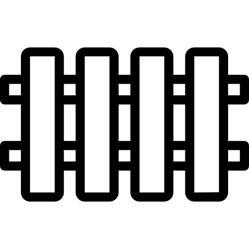
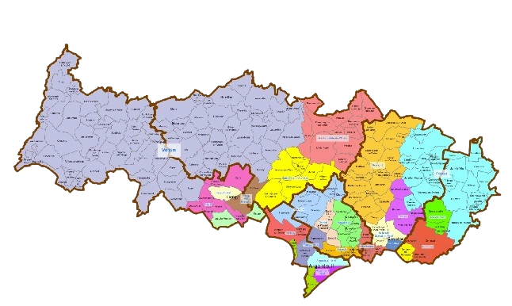
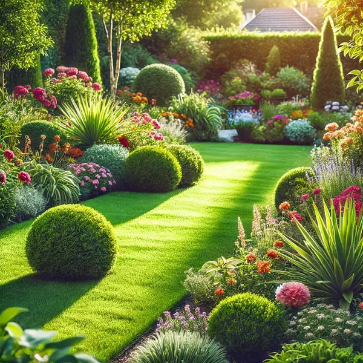

Transformez votre espace extérieur en un véritable havre de paix grâce à nos conceptions personnalisées, qui marient harmonieusement esthétisme et nature. Que ce soit pour un jardin verdoyant, une terrasse élégante ou un espace de détente unique, nous créons des aménagements sur mesure qui s'adaptent parfaitement à votre style de vie et à vos envies.
NOS SERVICES
Conception de Jardins

Transformez votre espace extérieur en un havre de paix avec nos conceptions sur mesure, alliant esthétisme et nature.
Plantation et Entretien espace vert

Assurez un jardin éclatant avec nos services de plantation et d’entretien, pour des plantes en pleine santé toute l'année.
Système Irrigation

Optimisez l'arrosage de votre jardin avec nos systèmes d'irrigation sur mesure. Profitez d'une solution efficace et durable pour un espace toujours verdoyant.
Entretien Annuel

Préparez votre jardin pour l’hiver avec notre service d’entretien hivernal. Protégez vos plantes et assurez leur santé pour un printemps resplendissant.
Aménagement de Terrasses

Créez un espace extérieur unique avec nos services d'aménagement de terrasses. Alliez confort et style pour profiter pleinement de vos moments en plein air.
Rénovation de Jardins

Donnez une nouvelle vie à votre jardin avec notre service de rénovation. Nous redéfinissons votre espace pour en faire un lieu accueillant et plein de charme.
Elagage et Abattage
Assurez la santé de vos arbres avec nos services d'élagage et d'abattage professionnels. Nous garantissons un travail soigné pour un jardin sûr et esthétique.
Pose de Clôture
Définissez vos espaces extérieurs avec élégance grâce à notre service de pose de clôture. Alliez sécurité et esthétique pour un jardin protégé et harmonieux.
Aménagement d'Allées

Valorisez votre jardin avec nos aménagements d’allées sur mesure. Créez des chemins esthétiques et pratiques qui guident vos pas tout en sublimant votre espace extérieur.
Assurez la beauté et la vitalité de votre jardin tout au long de l'année grâce à nos services de plantation et d'entretien complets. Nous prenons soin de chaque plante, du choix des espèces adaptées à votre environnement jusqu'à l'entretien régulier, pour garantir un jardin éclatant et des plantes en pleine santé, quelle que soit la saison.
Optimisez l'arrosage de votre jardin grâce à nos systèmes d'irrigation sur mesure, conçus pour répondre aux besoins spécifiques de votre espace extérieur. Profitez d'une solution moderne, efficace et durable qui assure une répartition homogène de l'eau, réduisant les gaspillages et maintenant vos plantes en parfaite santé. Avec nos installations, votre jardin reste verdoyant et éclatant tout au long de l'année, même pendant les périodes de sécheresse.
Préparez votre jardin pour l’hiver avec notre service d’entretien hivernal complet. Nous protégeons vos plantes des rigueurs de la saison froide, en appliquant les soins nécessaires pour préserver leur santé et leur vigueur. Nos experts en jardinage prennent soin d’isoler les racines, de tailler les végétaux, et de protéger les sols afin d’assurer une floraison éclatante dès l’arrivée du printemps. Confiez-nous votre jardin pour un espace extérieur en pleine forme, prêt à renaître avec éclat au retour des beaux jours.
Créez un espace extérieur à votre image avec nos services d'aménagement de terrasses sur mesure. Que vous souhaitiez une terrasse chaleureuse pour vos repas en famille ou un espace élégant pour vos réceptions, nous allions confort et style pour répondre à vos envies. Nos experts en aménagement extérieur sélectionnent des matériaux durables et esthétiques pour un rendu harmonieux et résistant aux intempéries. Profitez d'une terrasse unique, conçue pour s’intégrer parfaitement dans votre environnement, et savourez pleinement vos moments de détente en plein air, été comme hiver.
Offrez une seconde jeunesse à votre jardin grâce à notre service de rénovation. Nos experts repensent et redéfinissent chaque recoin de votre espace extérieur pour en faire un lieu accueillant, harmonieux et plein de charme. De la réorganisation des massifs de fleurs à la création de nouveaux espaces de détente, nous transformons votre jardin en un havre de paix adapté à vos goûts et besoins. Que ce soit pour une touche moderne, un style naturel ou une ambiance zen, nous vous accompagnons pour créer un jardin qui reflète votre personnalité et invite à la relaxation.
Préservez la santé et la beauté de vos arbres grâce à nos services d'élagage et d'abattage professionnels. Nos experts qualifiés interviennent avec soin pour assurer un entretien adapté, éliminant les branches mortes, rééquilibrant les formes et sécurisant votre espace. En plus d'améliorer l'esthétique de votre jardin, nous veillons à maintenir la sécurité autour de vos arbres, protégeant ainsi vos biens et vos proches. Faites confiance à notre expertise pour un jardin sûr, harmonieux et parfaitement entretenu tout au long de l'année.
Délimitez vos espaces extérieurs avec style grâce à notre service de pose de clôture sur mesure. Nous vous proposons des solutions qui allient sécurité et esthétique, pour créer un jardin protégé tout en conservant une harmonie visuelle avec votre environnement. Que vous préfériez une clôture en bois naturel, en métal moderne ou en matériaux composites durables, nos experts installent chaque élément avec précision pour garantir solidité et élégance. Transformez votre jardin en un espace intime et accueillant, parfaitement adapté à votre style de vie.
Sublimez votre jardin en créant des allées élégantes et fonctionnelles grâce à nos aménagements sur mesure. Nos experts conçoivent des chemins qui allient praticité et esthétisme, en utilisant des matériaux variés comme la pierre, le gravier ou le pavé, parfaitement adaptés à votre style et à votre environnement. Ces allées définissent et structurent votre espace extérieur, guidant vos pas avec charme et facilitant l’accès à chaque recoin de votre jardin. Offrez-vous un aménagement qui rehausse la beauté de votre extérieur tout en améliorant votre confort de déplacement au quotidien.
NOTRE SAVOIR FAIRE
Chez Rénov Exterieur, nous mettons à votre service une équipe de paysagistes passionnés et expérimentés, dédiée à transformer vos espaces extérieurs en véritables lieux de détente et de beauté. Nos professionnels utilisent des équipements de pointe, assurant un travail précis et des finitions soignées, que ce soit pour l’aménagement de jardins, la création de terrasses ou l'entretien de vos espaces verts. Grâce à cette combinaison de savoir-faire et de matériel performant, nous garantissons un rendu à la hauteur de vos attentes, pour des espaces extérieurs uniques et harmonieux.
NOS TARIFS
AVANTAGEUX
Chez Assainissement 75, nous vous garantissons des services d'assainissement de première qualité à des tarifs attractifs. Notre engagement est de vous fournir des solutions efficaces qui répondent à vos besoins tout en respectant votre budget.
DEVIS GRATUITPOURQUOI CHOISIR RENOV EXTERIEUR ?
Faire appel à Rénov Extérieur, c’est opter pour une expertise locale reconnue dans le Val-d'Oise. Nous comprenons les besoins spécifiques de la région et nous adaptons nos solutions pour répondre aux attentes de chaque client. Notre équipe expérimentée utilise des techniques modernes et des matériaux de qualité pour garantir des réalisations durables, que ce soit pour l’aménagement paysager, la création de terrasses ou la rénovation de vos espaces extérieurs. Avec un accompagnement personnalisé et une attention au détail, Rénov Extérieur s’engage à transformer vos espaces extérieurs en véritables havres de paix.
FAITES NOUS CONFIANCE
Services personnalisés et sur mesure :
Nous offrons des solutions d'aménagement
paysager adaptées à vos besoins spécifiques et à votre style de
vie.
Utilisation de matériaux de haute qualité :
Nous utilisons uniquement des matériaux
de première qualité pour garantir la durabilité et la beauté de
nos créations.
Engagement envers l'environnement :
Nous pratiquons un jardinage écologique et
durable pour préserver l'environnement tout en créant des
espaces magnifiques.
ZONE D'INTERVENTION ASSAINISSEMENT PARIS
Assainissement Paris se déplace en urgence ou sur simple rendez-vous dans Paris et dans tous les départements limitrophes. Vous pouvez nous contacter au 01 69 52 00 23 ou via notre formulaire de devis. Nous veillons à vous répondre dans les meilleurs délais. Argenteuil - Ermont - Bezons - Cormeilles-en-Parisis - Eaubonne - Franconville - Garges-les-Gonesse - Goussainville - Groslay - Herblay-sur-Seine - Cergy - Montmagny - Montmorency - Pontoise - Saint-Brice - Saint-Leu-la-Foret - Sannois - Sarcelles - Taverny - Gonesse
L’ENTREPRISE DE PAYSAGE QUI VOUS SIMPLIFIE LA VIE
Avec Rénov Extérieur, profiter d’un jardin soigné et d’espaces extérieurs harmonieux devient simple et sans souci. Nous prenons en charge toutes les étapes de vos projets d’aménagement, de la conception à la réalisation, en passant par l’entretien régulier. Notre équipe s’occupe de tout, vous permettant de vous concentrer sur l’essentiel : profiter de votre jardin et de votre terrasse. Grâce à notre savoir-faire et à nos services sur mesure, vos espaces verts deviennent une source de plaisir, sans tracas ni complications.
